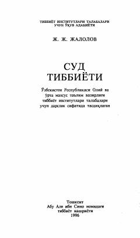

STTibbiyot institutlari talabalari uchun mo'ljallangan sud tibbiyoti bo'yicha fundamental o'quv qo'llanma.
Ushbu darslik tibbiyot institutlari talabalari va amaliyotchi shifokorlar uchun mo'ljallangan bo'lib, суд tibbiyotining asosiy to'rt sohasi: murdalarni tekshirish, tirik shaxslarni ko'rikdan o'tkazish, daliliy ashyolarni tekshirish hamda hujjatlar bo'yicha ekspertizalarni o'tkazish masalalarini qamrab oladi. Kitobda tibbiyot va huquqshunoslik fanlarining o'zaro bog'liqligi, jarohatlanish turlari va ekspertiza jarayonlarining ilmiy-amaliy asoslari yoritilgan.